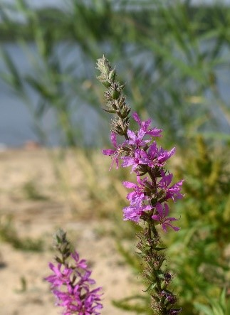
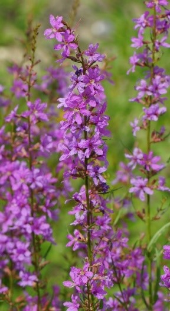

|

Корень толстый, деревянистый, разветвленный. Стебли обычно одиночные, 30-100 (до 200) см выс., в верхней части ветвистые или простые,
ребристые, по ребрам с б.м. заметными выростами, опушенные, наиболее густо в верхней части. Листья сидячие, при основании сердцевидные или
округлые, продолговато-ланцетные, цельнокрайные, на верхушке заостренные, опушенные с обеих сторон или снизу. Цветки собраны в густые
кистевидные соцветия на верхушках ветвей. Прицветные листья постепенно уменьшаются кверху. Веточки соцветия, цветоножки,
прицветные листья опушенные, обычно довольно густо. Чашечки 6-10 мм дл., конические, опушенные, наружные зубцы чашечки 3-4 мм дл.,
внутренние ок. 1 мм. Лепестки продолговатые, розово-пурпурные. Коробочки продолговато-овальные, 3-4 мм дл., двугнездные.
Фотограф: Елена Иванова |

Многолетнее растение высотой 50-100 см, с деревянистым корнем, прямостоячими стеблями и обычно сизоватыми листьями. Нижние листья
супротивные, верхние — очередные; листовые пластинки лопатчатые. Цветки многочисленные, собранные в пазухах прицветных листьев,
образуют негустые кистевидные соцветия. Венчик розово-пурпурный; лепестки длиной менее 1 см. Плод — цилиндрическая коробочка длиной
до 5 мм. Цветёт в июне-августе, плодоносит с июля до осени.
Фотограф: Тамара Риб |